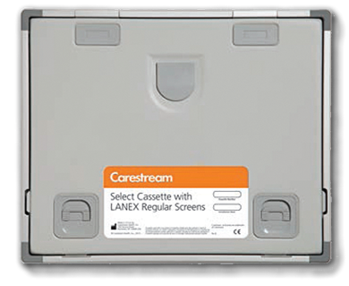

Casetas carestream select y medical x-ray con pantallas carestream lanex

DESCRIPCIÓN:
Las CASETAS CARESTREAM SELECT están diseñadas y construidas para mantener un firme contacto entre la pantalla y la película, y evitar las filtraciones de luz que degradan la calidad de la imagen. Las PANTALLAS CARESTREAM LANEX son de gran calidad; fabricadas en tierras raras para diversas aplicaciones.
CARACTERÍSTICAS:
• La CASETA CARESTREAM SELECT es muy liviana y fácil de usar.
• A pesar de ser liviana, está hecha de una sólida construcción en su bisagra, bordes y ventana de identificación, y diseñada para mantener el contacto pantalla-película y evitar filtraciones de luz aun en caso de caerse.
• Diseñado con un broche único que se puede operar con una sola mano para una mayor productividad.
• Es compatible con la línea de multicargadores Carestream Select para un manejo automatizado de la película en luz ambiente.
• La baja absorción de su panel frontal permite reducir la dosis de radiación en técnicas de bajo kilovoltaje sin detrimento de la calidad de diagnóstico.
Contacto firme entre pantalla y película:
• El aire atrapado entre la película y la pantalla hace que la luz recorra una mayor distancia de la pantalla a la película. Esto causa un aumento en la dispersión de la luz y pérdida de la resolución. La CASETA CARESTREAM SELECT cuenta con paneles curvados que expulsan el aire a medida que se cierra la caseta. Una vez cerrada, los paneles quedan totalmente planos y paralelos y mantienen un firme contacto entre la pantalla y la película.
• Para reforzar aún más este contacto pantalla-película, cada pantalla está montada sobre una espuma de polímero (tipo hule espuma), como resultado de todo este diseño, se asegura un inmejorable contacto pantalla-película con el que se obtienen repetidamente imágenes de alta definición.
VENTAJAS Y BENEFICIOS DE LAS PANTALLAS CARESTREAM LANEX:
• Producen excelentes imágenes cuando se utilizan en conjunto con las películas Carestream T-Mat/RA.
• Incorporan fósforos que contienen compuestos metálicos de la serie de los lantánidos de tierras raras; de donde obtienen su eficiencia en la conversión de rayos X en luz verde.
USOS:
Tipos de PANTALLAS CARESTREAM LANEX que se ajustan a sus necesidades:
• Pantallas CARESTREAM LANEX Fast:
Pantallas rápidas, producen imágenes de calidad con una menor dosis de radiación. La combinación de estas pantallas y la película Carestream T-Mat H/RA, provee el sistema de mayor velocidad de Carestream (900), para aplicaciones donde se requiere la menor dosis de radiación posible, tiempos de exposición cortos, en pacientes robustos o en equipos de rayos X de baja capacidad.
• Pantallas CARESTREAM LANEX Regular:
Velocidad estándar. Diseñadas para procedimientos de radiografía general.
• Pantallas CARESTREAM LANEX Fine:
Diseñadas para procedimientos que requieren muy alta definición de imagen como en el caso de extremidades.
DATOS COMPLEMENTARIOS: Si desea obtener más información sobre las CASETAS SELECT o las PANTALLAS CARESTREAM LANEX, favor de contactar al representante CARESTREAM de su localidad o a:
CARESTREAM
Teléfono: (33) 3134-6200
o bien, visítenos en: www.carestream.com.mx